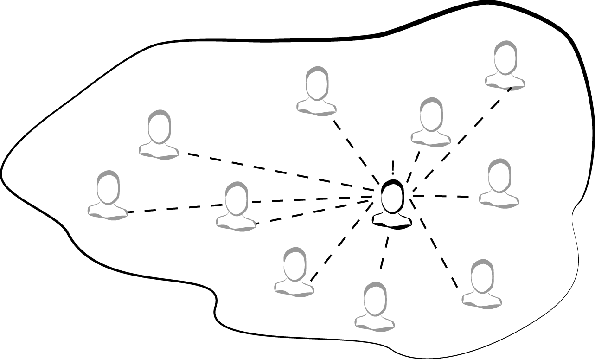

第二章 API治理
嘿,规则就是规则,让我们面对它,没有规则就有混乱.
科斯莫 克莱默(Cosmo Kramer)
治理不是让人们兴奋的事情.这也是带有一些情歌包袱的话题.毕竟,很少人愿意被治理,而且大多数人都有糟糕治理策略和无意义的规则的经历.糟糕的治理(如"糟糕的设计")让生活更加艰难.但是在我们的经验中,对于API管理我们很难只说不做.
事实上,我们甚至会说:没有API治理,你就不可能去管理你的API.
有时,API治理虽然发生在你的公司,但是你从来没有使用过"治理"术语.这是一个好现象.命名确实很重要,但是在一些组织,治理往往按时这高度集中化和命令式的期望.这可能与去中心化和权利下放的文化背道而驰,所以在那些地方,治理是个贬义词是有道理的.无论管它叫什么,即使在这种去中心化的文化中,某种形式的决策治理正在发生,但是它看起来可能与传统的自上而上的组织的治理系统完全不同.
对于"你应该治理API吗?"这样的问题,有点乏味.因为在我们的观念里,答案总是肯定的.相反,问你:"哪些决策需要被治理?",以及"哪里需要被治理",决定这些问题的答案是设计治理系统的工作.不同的治理风格会产生非常不同的工作文化,生产率,产品质量和战略价值.你选哟设计一个适合你的系统.本章的目标是为你提供实现此目的的构建区.
我们将首先探讨良好API治理的三个基本元素:决策,治理和复杂性.有了这种理解,我们将进一步研究如何将决策分配到你的公司,以及它们是如何影响你的工作的.这意味着要进一步研究集权,分权和做出决策的要素.最后,我们将看一下构建治理系统的影响,并了解三种治理风格.
治理是API管理的核心部分,它将贯穿本书的其他部分.所以,API治理的实际含义和它如何帮助你构建更好的API管理系统值得你去花时间理解.
- 理解API治理
事实上,大部分需要做出的决策都是技术活.一些决策是及其重要的,但是其他则是微不足道的.所有这些决策使得技术团队的工作是有技术含量的.一个好开发的核心技能是一遍又一遍的做出许多高质量的决策.这个相当明显的观点,但在管理API时总是很容易被人遗忘.
无论你引进哪种技术,如何进行架构设计或者选择哪家公司去合作,决定你生意命运的都是每个人的决策能力.这也是为什么治理重要的原因.你需要用有利于实现组织目标的方式制定所有的决策.
听起来容易,做起来难.你需要深入的理解治理的基本概念,以及他们之间的相互关系,才能加大成功的可能.让我们从快速查看API决策开始.
- 决策
你和大多数人主要的工作就是决策.这也是为什么治理如此重要的原因.总的来说,如果你能做出一个好的决策,就会有一个好的结果.但是决策并不仅仅是技术选型.你还需要在API领域上做出更广泛的决策.API团队可能会面对如下的选择:
我们API的URI应该是/payments还是/PaymentCollection格式?
我们应该将API托管给哪个云服务商?
我们有两个客户信息应该舍弃哪个?
如何选择开发团队成员?
我应该如何命名java变量?
从上面这些问题中,我们可以得出一些简单的结论.第一,API管理的决策涉及复杂的人和关系,做出这些决策需要人和团队之间的密切合作.第二,人做出的不同选择有不同的影响,云服务商的选择对于API管理决策的影响远远大于对于Java变量的命名.第三,量变会引起质变.如果有10000个命名奇葩的Java变量,会极大的影响API实现的可维护性.
所有这些跨领域的选择,都是在大量的协调下做出,需要结合在一起才能产生好的结果.这是个繁复的工作.在本章的后面,我们将针对这个问题,给你一些适合你决策系统的指导.但是首先,让我们进一步了解这些决策治理的含义,以及为什么治理如此重要.
- 决策治理
如果你曾经独立完成过一些小项目,你会知道这些工作的成功与否完全取决于你.如果你坚定的做出好的决策,你可以得到好的结果.一个大神可以让你惊讶.但是这样的工作方式无法很好的推广.当你开发的东西上线,新功能和新需求也将不断增加.这就意味着你需要短时间内做出许多决策,即你需要更多的决策者.这样的规模式决策需要谨慎.参与决策的人越多,你越无法保证决策的质量.
这就是治理的来由.治理是管理决策制定和执行的过程.注意,我们并不是说控制和权力就是治理.治理与权利无关.它是提高人决策质量的方式.在API领域,高质量的治理往往意味着构建的API有利于组织取得成功.这个过程你可能需要一些控制级别和权力去实现,但这并不是目的.
在API中应用治理有很多方式.例如,你可以提出一种策略,要求公司中所有团队必须使用标准的技术栈.或者要求所有API在发布前必须要通过一系列标准质量检测.策略可能有松紧,但是殊途同归.实际中,你将同时管理大量不同类型的决策,同时你的治理系统将混合许多不同的约束,奖励,政策和流程.
Keep in mind that governance always has a cost. Constraints need to be communicated, enforced, and maintained. Rewards that shape decision-making behavior need to be kept valuable and attractive to your audience. Standards, policies, and processes need to be documented, taught, and kept up to date. On top of that, constant information gathering is needed to observe the impact of all of this on the system. You may even need to hire more people just to support your governance efforts.
Beyond those general costs of maintaining the machinery of governance, there are also the hidden costs of applying governance to your system. These are the impact costs that come up when you actually start governing the system. For example, if you mandate the technology stack that all developers must use, what is the organizational cost in terms of technological innovation? Also, what will be the cost to employee happiness? Will it become more difficult to attract good talent?
It turns out that these kinds of costs are difficult to predict. That’s because in reality you’re governing a complex system of people, processes, and technology. To govern an API system, you’ll first need to learn what it takes to manage a complex system in general.
Governing Complex Systems The good news is that you don’t need to control every single decision in your organization to get great results from governance. The bad news is that you’ll need to figure out which decisions you will need to control in order to get those good results. That’s not an easy problem to solve, and you won’t find a definitive answer in this book. That’s because it’s impossible to give you an answer that will fit your unique context and goal.
If all you wanted to do was bake a sponge cake, we could give you a pretty definitive recipe for making one. We’d tell you how much flour and how many eggs you’d need and what temperature to set your oven at. We could even tell you exactly how to check if the cake is done. That’s because there is very little variability in modern baking. The ingredients are reasonably consistent no matter where you purchase them from. Ovens are designed to cook at specific, standardized temperatures. Most importantly, the goal is the same—a specific kind of cake.
But you aren’t making a cake, and this isn’t a recipe book. You’ll need to deal with an incredible amount of variability. For example, the people in your company will have varying levels of decision-making talent. The regulatory constraints you operate in wiill be unique to your industry and location. You’ll also be serving your own dynamically changing consumer market with its own consumer culture. On top of all that, your organizational goals and strategy will be entirely unique to you.
All this variability makes it tough to prescribe a single correct “recipe” for API governance. To make things even harder, there’s also the small problem of knock-on effects. Every time you introduce a rule, or create a new standard, or apply any form of governance, you’ll have to deal with unintended consequences. That’s because all the various parts of your organization are intertwined and connected. For example, to improve the consistency and quality of your API code, you could introduce a standard technology stack. That new stack might result in bigger code packages as programmers start adding more libraries and frameworks. And that could result in a change to the deployment process because the bigger deployment packages can’t be supported with the existing system.
With the right information, maybe you could predict and prevent that outcome. But it’s impossible to do that for every possible eventuality, especially within a reasonable amount of time. Instead, you’ll need to accept the fact that you are working with a complex adaptive system. As it turns out, this is a feature, not a bug. You’ll just need to figure out how to use it to your advantage.
COMPLEX ADAPTIVE SYSTEMS When we say that your organization is a complex adaptive system, we mean:
It has lots of parts that are interdependent (e.g., people, technologies, process, culture).
Those parts can change their behavior and adapt to system changes (e.g., changing deployment practices when containerization is introduced).
The universe is full of these kinds of systems, and the study of complexity has become an established scientific discipline. Even you yourself are a complex adaptive system. You might think of yourself as a single unit—a self—but “self” is just an abstraction. In reality, you’re a collection of organic cells, albeit a collection of cells that is capable of amazing feats: thinking, moving, sensing and reacting to external events as an emergent whole “being.” At the cellular level, your individual cells are specialized; old, dying cells are replaced and groups of cells work together to produce big impacts in your body. The complexity of the biological system that you are composed of makes your body highly resilient and adaptable. You’re probably not immortal, but you’re equally likely to be able to withstand massive amounts of environmental change and even bodily damage, thanks to your complex biological system.
Usually, when we talk about “systems” in technology we focus on software systems and network-based architecture. Those kinds of systems can definitely grow to be complex. For example, the web is a perfect example of system-level complexity and emergence. A network of individual servers run independently, but through their dependencies and interconnections produce an emergent whole that we call “the web.” But most of that software isn’t really adaptive.
The API software you write today is pretty dumb. That doesn’t mean that your code is of poor quality or that it doesn’t do the job it was designed for. In fact, it’s just the opposite; most of the APIs you implement will do exactly what they’re supposed to do. And that’s the problem. You can make an API that’s smart enough to adapt to a changing traffic pattern or an increasing number of errors, but it’s impractical to make one that can add a new feature without human intervention, or correct a complex bug by itself, or update its own documentation to make it easier to learn.
Now, all of that might change in the future. But as it stands today, it’s your people that drive the behavior of your software system. The good news is that people are very good at adapting (especially when compared to software). Your API organization is a complex adaptive system. All of the individual people in your organization make many local decisions, sometimes collectively and sometimes individually. When all those decisions happen at scale and over time, a system emerges. Just like your body, that system is capable of adapting to a lot of change.
But working with a complex system requires a special kind of approach. It’s difficult to predict the impact of changes in a complex system—making a change to one part of your system can lead to unintended consequences in another part. That’s because the people in your organization are constantly adapting to the changing environment. For example, introducing a rule that deploying software in “containers” is forbidden would have a wide-reaching impact, affecting software design, hiring, deployment processes, and culture.
All of this means that you can’t get the outputs you want from the system by implementing large changes and waiting for results. Instead, you’ll need to “nudge” the system by making smaller changes and assessing their impact. It requires an approach of continuous adjustment and improvement, in the same way you might tend to a garden, pruning branches, planting seeds, and watering while continuously observing and adjusting your approach. In Chapter 5, we’ll explore the concept of continuous improvement in more detail.
Governing Decisions In the last section we introduced the concept of governing decisions inside a complex system. Hopefully, that’s helped you to understand a fundamental rule for API governance: if you want your governance system to be effective, you’ll need to get better at managing decisions. We think one of the best ways to do that is to focus on where decisions are happening and who is making them. It turns out that there isn’t a single best way to map those decisions out. For example, consider how API design governance could be handled in two different fictional companies:
Company A: Pendant Software At Pendant Software, all API teams are provided with access to the “Pendant Guidelines for API Design” e-book. These guidelines are published quarterly by Pendant’s API Center of Excellence and Enablement—a small team of API experts working inside the company. The guidelines contain highly prescriptive and very specific rules for designing APIs. All teams are expected to adhere to the guidelines and APIs are automatically tested for conformance before they can be published.
As a result of these policies, Pendant has been able to publish a set of industry-leading, highly consistent APIs that developers rate very favorably. These APIs have helped Pendant differentiate itself from competitors in the marketplace.
Company B: Vandelay Insurance At Vandelay, API teams are given the company’s business goals and expected results for their API products. These goals and results are defined by the executive teams and are updated regularly. Each API team has the freedom to address an overall business goal in the manner they choose and multiple teams can pursue the same goal. API teams can design and implement APIs however they like, but every product must adhere to Vandelay’s enterprise measurement and monitoring standards. The standards are defined by Vandelay’s System Commune, a group made up of individuals from each of the API teams who join voluntarily and define the set of standards that everyone needs to follow.
As a result of these policies, Vandelay has been able to build a highly innovative, adaptive API architecture. This API system has enabled Vandelay to out-maneuver its competition with innovative business practices that can be delivered very quickly in its technology platform.
In our fictional case studies, both Pendant and Vandelay were wildly successful in their management of decision making. But the way they governed their work was incredibly different. Pendant found success with a highly centralized, authoritative approach, while Vandelay preferred a results-oriented method. Neither approach is “correct,” and both styles of governance have merit.
To govern decisions effectively, you’ll need to address three key questions:
Which decisions should be managed?
Where should those decisions be made (and by whom)?
How will the system be impacted by your decision management strategy?
Later in the book we’ll dig into the questions of which decisions should be managed and how those decisions will impact your system. For now, we’ll focus on the second question of where in the system the most important decisions should be made. To help you address decision distribution, we are going to dig deeper into the subject of governing a decision. We’ll tackle the trade-off between centralized and de-centralized decision making and we’ll take a closer look at what it means to distribute a decision.
Centralization and Decentralization Earlier in this chapter, we introduced the concept of a complex adaptive system and we used the human body as an example. These kinds of systems abound in nature, and you are surrounded by them. For example, the ecosystem of a small pond can be thought of as a complex adaptive system. It continues to survive thanks to the activities and interdependence of the animals and vegetation that live in it. The ecosystem adapts to changing conditions thanks to the localized decision making of each of these living things.
But the pond doesn’t have a manager, and there is no evidence that the frogs, snakes, and fish hold quarterly management meetings. Instead, each agent in the system makes individual decisions and exhibits individual behaviors. Taken together these individual decisions and actions form a collective, emergent whole that can survive even as individual parts of the system change or appear and disappear over time. Like most of the natural world, the pond system succeeds because system-level decisions are decentralized and distributed.
As we established earlier, your organization is also a complex adaptive system. It’s a product of all the collective individual decisions made by your employees. Just like in a human body or a pond ecosystem, if you were to allow individual workers to have complete freedom and autonomy, the organization as a whole would become more resilient and adaptive. You’d have a bossless, decentralized organization that could find its way thanks to the individual decisions of its employees (see Figure 2-1).

However, businesses leaders don’t respond well to this level of uncertainty and lack of control. Chances are you’ll need to steer your system toward specific goals that go beyond survival. Also, it’s likely that you aren’t willing to risk letting your company die for the sake of a better company taking its place. You’ll almost certainly want to reduce the risk that any individual agent can destroy the whole company because of a bad decision. That means you’ll need to reduce decision-making freedom for individuals and introduce some accountability. One way of doing that is to introduce decision centralization (Figure 2-2).

The truth is that there is no perfectly centralized or perfectly decentralized organization. Instead, different types of decisions are distributed within the organization in different ways—some are more centralized while others are more decentralized. You’ll need to decide how to distribute the decisions that impact your system the most. So, which ones should be more centralized and which ones should be more decentralized?
Remember, a primary goal of governing decisions is to help your organization succeed and survive. What that means is entirely dependent on your business context, but generally speaking it means that decisions need to be timely enough to enable business agility and of sufficient quality to improve the business (or at the very least avoid damaging it). There are three factors that impact the ability to make decisions:
Availability and accuracy of information It’s really difficult to make a good decision if you base it on information that is incorrect or missing. That could mean being misled about the goal or context of the decision, but it could also mean not knowing what the decision’s impact will be on the system. Most of the time, we assume the responsibility for gathering decision-making information rests at the feet of the decision makers. But for the purposes of distributing decisions, we also need to think about how centralizing or decentralizing a decision affects the information that’s available.
Decision-making talent Generally speaking, decision quality improves if the decision maker is good at making high-quality decisions. Or, in simpler language—highly talented people with lots of experience will make better decisions than less-talented people with no experience. When it comes to distributing decision making, the challenge is to also distribute your talent in a way that helps you the most.
Coordination costs Complex decisions can’t be made in a timely manner unless the decision making is shared. But whenever you share decision-making work you’ll incur a coordination cost. If that coordination cost grows too high, you won’t be able to make decisions quickly enough. Centralization and decentralization of decisions can have a big impact on coordination costs.
Thinking about decisions in terms of these factors will help you decide when a decision should be centralized or decentralized. To help you understand how to do that, we’ll take a look at it from two perspectives: scope of optimization and scale of operation. Let’s start by digging into scope and its relationship with decision-making information.
SCOPE OF OPTIMIZATION The big difference between a centralized decision and a decentralized decision has to do with their scope. When you make a centralized decision, you are making it for the entire organization. So, your scope for the decision includes the whole system and your goal is to make a decision that improves that system. Another way of saying this is that the decision you are making is meant to optimize the system scope. For example, a centralized team might decide on a development methodology for the entire company to follow. The same team might also make decisions about which APIs in the system should be retired. Both of these decisions would be made with the goal of doing what’s best for the entire system.
Conversely, the primary characteristic of a decentralized decision is that it is optimized for a local scope. When you are optimizing for the local scope, you are making a decision that will improve your local context—the set of information that pertains only to your local situation. While your decision might have an impact on the wider system, your goal is to improve your local results. For example, an API team can make a local decision to use a waterfall development process because they’re sharing the work with an external company that insists on it.
The great thing about decentralized decision making is that it can help you make big gains in efficiency, innovation, and agility for your business overall. That’s because decentralized decision makers are able to limit their scope of information to a local context that they understand. This means they can form a decision based on accurate information about their own problem space, which helps them produce better decisions. For any modern business that is trying to succeed with a strategy of agility and innovation, the decentralized decision pattern should be the default approach.
However, making decisions that focus only on optimizing the local scope can cause problems, particularly if those decisions have the potential to impact the system negatively and in irreversible ways. When Amazon CEO Jeff Bezos talks about the impact of decisions, he splits them into two types: “type 1” decisions that can be easily reversed if they are wrong and “type 2” decisions that are near impossible to recover from. For example, a lot of big companies choose to centralize decisions about API security configuration to prevent a local optimization from creating a system vulnerability.
Beyond dangers to the system, there are times when system-level consistency is more valuable than local optimization. For example, an individual API team might choose an API style that makes the most sense for their problem domain. But if every API team chooses a different API style, the job of learning to use each API becomes more difficult due to a lack of consistency, especially when many APIs need to be used to accomplish a single task. In this case, optimizing the API style decision for the system scope might be better.
You’ll need to think about the scope of optimization carefully when you plan where a decision should happen. If a decision has the potential to impact your system in an irreversible way, start by centralizing it so that it can be optimized for system scope. If decision quality could benefit from the local context of information, start by decentralizing it. If decentralizing a decision could result in unacceptable inconsistency at the system level, consider centralizing it.
SCALE OF OPERATION If you had unlimited resources for making good decisions, you’d only need to think about scope for decision making. But you don’t. So, in addition to scope, you’ll need to think about the scale of decisions being made. That’s because if there is a bigger decision demand, there will be more pressure on your decision-making talent supply and an upward pressure on your coordination costs. If you want your API work to scale as your organization grows, you’ll need to plan your decision distribution pattern carefully.
Decentralizing a decision creates a big talent demand when you are operating at scale. When you decentralize a decision you are distributing it to more than one team. If you want all of those decisions to be high quality, you’ll need to fill each of those teams with talented decision makers. If you can’t afford to do that, you’ll end up generating lots of bad decisions. So, it’s worthwhile to hire the best decision-makers you can for every decision making position in your company.
Unfortunately, hiring good people isn’t an industry secret. There are a limited number of talented and experienced people available and a lot of companies competing to hire them. Some companies are willing to spend whatever it takes to make sure that they get the best talent in the world. If you are lucky enough to be in that situation, you can decentralize more of your decisions because you have the talent to make them. Otherwise, you’ll need to be more pragmatic with your distribution decisions.
If your supply of top-level, “grade A” decision-making talent is limited, you may choose to pool that talent together and centralize the most important decisions to that group of people. That way, you have a greater chance of producing better decisions, faster. But an increasing scale of decision demand wreaks havoc on this model too, because as the demand for decision making grows, the centralized team will need to grow along with it. As the team grows, so too will the cost of coordinated decision making. No matter how talented the people are, the cost of coordinating a decision grows as you add more people. Eventually you’ll reach a number that makes it impossible to reach decisions affordably.
All of this means that decision distribution will involve a lot of trade-offs. If the decision is highly impactful, like the “type 1” decisions that Jeff Bezos describes, you’ll need to centralize it and pay the price of lower decision-making throughput. Conversely, if speed and local optimization are most important, you can decentralize the decision and either pay for better people or accept the net reduction in quality of decisions.
That said, there is a way to manage this trade-off in a more nuanced and flexible way. It involves distributing the parts of the decision instead of the entre decision itself, and it’s what we are going to focus on in the next section.
The Elements of a Decision It’s difficult to distribute a decision in the way we’ve described so far because it’s a bit of an all-or-nothing affair. Do you let your teams decide which development method they want to use, or do you choose one and make every team use it? Do you let the teams decide when their API should retire, or do you take the choice away from them completely? In reality, governance requires more nuance. In this section, we’ll explore a way of distributing decisions with more flexibility by breaking them up into pieces.
Instead of distributing the entire decision, you can distribute parts of the decision. That way you can get the benefits of system-level optimization along with highly contextual local optimization at the same time. Some parts of a decision can be centralized while other parts are decentralized. To help you accomplish distribution with this kind of precision, we’ve broken down API decisions into the six decision elements you’ll need to distribute (see Figure 2-3):

Let’s start by taking a look at how distributing the inception of a decision impacts your system.
INCEPTION Every decision happens because someone thinks that decision needed to be made. It means that someone has identified that a problem or opportunity exists with more than one possible solution. Sometimes this is obvious, but in many cases spotting a decision-making opportunity requires talent and expertise. You’ll need to think about which decisions will naturally ignite on their own and which ones will need special handling to make sure that they happen.
Kicking off decisions about API work happens naturally in the course of day-to-day problem solving. For example, choosing which database to use for storing persistent data would be a difficult decision for a typical implementer to ignore. The decision happens because the work can’t continue without it. But there will also be situations where you’ll need to force inception to happen. This is usually for one of two reasons:
Habitualized decision making Over time, if a team makes the same decision over and over, the decision may disappear. That is, the possibilities are no longer considered and instead an assumption is made that work will continue in the same way it always has. For example, if every API implementation is written in the Java programming language, it may not occur to anyone to consider a different choice of language.
Decision blindness Sometimes, teams will miss opportunities to make impactful decisions. This can happen because of habit, but also because of limited information, experience, or talent. For example, a team may focus on the choice of which database to use for storage, but fail to identify that the API could be designed in a way that doesn’t require persistent storage.
Not every decision needs to happen, and it’s perfectly fine for decisions to be missed or for a cultural habit to make them implicit. It’s only a problem if not making a decision negatively impacts the results you are getting from your APIs. Arbitrarily demanding that more decisions happen could have a nightmarish impact on productivity. Instead, the role of API governance is to generate more of the decisions that will lead to optimal results and less of the decisions that will provide little value.
CHOICE GENERATION It’s hard to choose if you don’t know your options, and that’s what this element is all about. Choice generation is the work of identifying the choices to choose from.
If you’re making a decision in a domain you have a lot of experience in, generating choices can be pretty easy. But if there are lots of unknowns, you’ll need to spend more time identifying the possibilities. For example, an experienced C programmer already has a good idea of their options when they are deciding on a loop structure, but a beginner will probably need to do some investigation to learn that they can use a for loop or a while loop and the differences between the two.
Even if you know a domain fairly well, you’ll probably spend more time on choice generation if the cost and impact of the decision are very high. For example, you may have intimate knowledge of the different cloud hosting environments, but will still perform your due diligence of research when it comes time to sign a contract with one of them. Are there new vendors available that you didn’t know about? Are the prices and terms still the same as you remember?
From a governance perspective, choice generation is important because it’s where the boundaries of decision making are set. This is especially useful when the people coming up with the list of choices are not the same as the people making the selection. For example, you could standardize a list of possible API description formats, but let individual teams decide which format they like best. If you take this approach you’ll need to be careful about the quality of the “menu” you are providing. If the choices are overly restrictive or of poor quality, you’ll run into problems.
SELECTION Selection is the act of choosing from the list of possible options. Selection is the heart of decision making and it’s the step most people focus on, but the importance of the selection element depends a lot on the scope of choices that have been made available. If that scope is very wide, then the selection process is integral to the quality of the decision. But if that scope has been constrained to safe choices with little differentiating them, the selection step can be quick and less impactful.
Let’s walk through an example of this in action. Suppose you’re responsible for configuring Transport Layer Security (TLS) for your HTTP API. Part of that work includes a decision on which cipher suites (sets of cryptography algorithms) the server should support. It’s an important decision because some cipher suites have become vulnerable with age, so picking the wrong ones can make your API less secure. Also, if you choose cipher suites that your users’ client software doesn’t understand, nobody will be able to use your API.
In one scenario, you might be given a list of all the known cipher suites and asked to select the ones that the server should support. In this case, selection would need special care. You’d probably do a lot of research and only feel comfortable making a selection once you’d gathered as much information as possible. In fact, if you didn’t have a good amount of experience securing servers, you’d probably look for someone who did and ask them to make a selection for you.
But what if instead of being given the set of all possible cipher suites, you were given a curated list of them? The list of options might also include relevant information about how well supported each cipher suite is and what the known vulnerabilities are. Armed with this information you could probably make a faster choice. Equally, you’re choice is likely to be safer because your decision scope is limited to choices that have been deemed safe enough to use. In this case, you’d make a decision based on what you know about the clients using the API and the sensitivity and business importance of the API.
Finally, you might be given only one choice: a single cipher suite that you must use. A single-choice decision makes selection a trivial affair—the decision has been made for you. In this case, the quality of the decision is entirely dependent on the people who generated that choice. Hopefully it’s a good fit for the specific requirements you have.
So, the importance of selection depends a lot on the scope of the choices offered. There’s a bit of a trade-off at work here. If you push more of the decision-making investment into choice generation you’ll spend less time on selection, and vice-versa. That has implications for how you distribute decision elements and who should be responsible for them. Whichever decision element becomes more important will require a suitably talented decision maker to make it.
It also means you can combine system scope and local scope by distributing choice generation and choice selection. For example, you can centralize the generation of development method choices based on the system context while still allowing individual teams to choose their preferred method using their local context. This happens to be a particularly useful pattern for governing large API landscapes at scale and preserving both safety and speed of change.
AUTHORIZATION Just because a choice has been selected doesn’t mean the decision is done. The selection needs to be authorized before it can be realized. Authorization is the work of deciding on the validity of the selected choice. Was the right selection made? Is it implementable? Is it safe? Does it make sense in the context of other decisions that have been made?
Authorization can be implicit or explicit. When authorization is explicit it means that someone or some team must expressly authorize the decision before it can go forward. It becomes an approval step in the decision-making process. We’re sure you’ve been involved in many decisions that required some kind of approval. For example, in many companies, workers can select their holiday time from a list of work dates, but it’s up to their manager to make the final approval decision on the schedule.
Implicit authorization means that authorization happens automatically when some set of criteria has been met. Examples of this are the role of the person making the selection, the cost of the selection that was made, or adherence to a specific policy. In particular, authorization can become implicit when the person making the selection is also the person authorizing the selection. In effect, they become their own approver.
Explicit authorization is useful because it can further improve the safety of the decision. But if there are lots of decisions being made and all of them are being centrally authorized, then there is likely to be a reduction in decision speed. Lots of people will end up waiting for their approvals. Implicit authorization greatly increases the speed of decision making by empowering selection, but comes with greater risk.
How authorization should be distributed will be an important decision for you to make in your governance design. You’ll need to consider the quality of decision makers, the business impact of bad decisions, and the amount of risk built into the choices offered. For highly sensitive decisions, you’ll probably want more explicit authorization. For time-sensitive, large-scale decisions you’ll need to figure out how to introduce an implicit authorization system.
IMPLEMENTATION The decision process doesn’t end when the choice is authorized. A decision isn’t realized until someone does the work of executing or implementing the choice that has been made. Implementation is an important part of API management work. If the implementation of decisions is too slow or of poor quality, then all of your decision making is for naught.
Oftentimes a decision isn’t implemented by the people who made the selection. In these cases it’s important to understand what that means for the availability of accurate information gathering. For example, you might choose to introduce the hypermedia style of APIs into your landscape, but if the implementation of hypermedia APIs turns out to be too difficult for the designers and developers you’ll need to re-evaluate your decision. A good governance design will have to take these practicalities into account. It’s no good managing decisions in a way that makes them only theoretically better. When you are determining the quality of decision making you’ll need to include the implementability of the decision you are managing.
CHALLENGE Decisions aren’t immutable, and each decision you make for your API management system should be open to being challenged. Oftentimes we don’t consider how the decisions we make may need to be revisited, altered, even reversed in the future. Defining a challenge element allows us to plan for continuous change at the decision-making level.
For example, if you’ve defined a “menu” of choices for API teams to choose from, it’s wise to also define a process to go “off-menu.” That way you can sustain a decent level of innovation and prevent bad decisions from being made. But if everyone can challenge the decision to constrain these choices, then there aren’t really any constraints. So, you’ll need to identify who can challenge the decision and in what circumstances.
It’s also important to allow decisions to be challenged over time. As business strategies and context change, so too should the decisions of your system. To plan for that kind of adaptability you’ll need to build the challenge function into your system. That means you’ll need to think about whom in your organization will have the ability to “pull the cord” and challenge an existing decision.
Decision Mapping We now know that decisions are composed of a number of elements. Understanding that decisions have atomic elements allow us to distribute the pieces of a decision rather than the entire decision process. This turns out to be a powerful feature of organizational design and will allow you to exert greater influence over the balance of efficiency and thoroughness.
For example, a decision about the style a new API should have is an important one. In the clumsy, binary centralization versus decentralization discussion, the API management designer might consider whether the members of the API team should own the API style decision (decentralized) or a central body should maintain control of it (centralized). The advantage of distributing the decision-making power to the API teams is that each team can make the decision within a local context. The advantage of centralizing the decision within a single strategic team is that the variation in API styles is reduced and control over the quality of the style choice is maintained and controlled.
This is a difficult trade-off to make. But, if instead you distribute the elements of the decision, it’s possible to design an API management system that lives somewhere in between these two binary options. For example, you might decide that for an API style decision, the elements of research and choice generation should be owned by a centralized, strategic API management team, while the elements of choice selection, authorization, and implementation are owned by the API teams themselves. In this way, you choose to sacrifice some of the innovation that comes from distributing choice generation in order to gain the benefits of a known set of API styles within the company. At the same time, distribution of the API style selection and authorization elements allows the API teams to continue to operate at speed (i.e., they do not need to ask permission in order to choose a suitable style).
To get the most out of decision mapping, you’ll need to distribute decisions based on your context and goals. Let’s take a look at two fairly common decision scenarios to see how decision mapping can be a useful tool.
DECISION MAPPING EXAMPLE: CHOOSING A PROGRAMMING LANGUAGE You’ve identified that the decision of which programming language to choose for API implementation is highly impactful, and you’d like to govern it. Your organization has adopted a microservices style of architecture, and freedom to choose the programming language for implementation has been raised as a requirement. But after running a few experiments, you’ve noticed that variation in programming languages makes it harder for developers to move between teams and harder for security and operations teams to support applications.
As a result, you’ve decided to try out the decision distribution in Table 2-1 for deciding on a programming language.
Table 2-1. Programming language decision map Inception Choice generation Choice selection Authorization Implementation Challenge Centralized
Centralized
Decentralized
Decentralized
Decentralized
Decentralized
This way you constrain the programming languages to a set of choices that are optimized for the system as a whole, but allow the individual teams to optimize for their local contexts within those constraints. You’ve also allowed API teams to challenge the decision so that you can accommodate new language choices and changing situations.
DECISION MAPPING EXAMPLE: TOOL SELECTION Your CTO is trying to improve the level of agility and innovation of your software platform. As part of this initiative they have decided to allow API teams to choose their own software stacks for implementations, including the use of open source software. However, your procurement and legal teams have raised concerns based on legal risks and risks to supplier relationships. To get started with this cultural transition, you’ve decided to implement the decision map in Table 2-2 for the software stack decision on a trial basis.
Table 2-2. Tool selection decision map Inception Choice generation Choice selection Authorization Implementation Challenge Decentralized
Decentralized
Decentralized
Centralized
Decentralized
Centralized
Local optimization is one of the keys to your CTO’s strategy, so you chose to completely decentralize inception, choice generation, and selection. However, to reduce the system-level risk of a choice, you’ve mapped the authorization element to the centralized procurement and legal teams. This should work for now, but you are also aware that over time and at scale this has the potential to be a big bottleneck in your system, so you make a note to keep measuring the process and tune it accordingly.
Designing Your Governance System We’ve spent a lot of time going into the details of decision distribution because we think it’s a foundational concept for a governance system. But it’s not the only thing you’ll need to pay attention to if you want to introduce effective API governance. A good API governance system should have the following features:
Decision distribution based on impact, scope, and scale
Enforcement of system constraints and validation of implementation (from centralized decisions)
Incentivization to shape decision making (for decentralized decisions)
Adaptiveness through impact measurement and continuous improvement
It’s difficult to get the advantages of decision centralization if the rest of the organization doesn’t conform to the decision. That’s why enforcement and validation needs to be a feature of an API governance system. We’ve purposefully steered away from the authoritative parts of governance so far, but ultimately you’ll need to build at least some constraints into your system. Even the most decentralized organizations have rules that need to be followed. Of course, validation and enforcement will require some level of obedience. If the centralized decision-making team has no authority, the decisions will carry no weight.
If you don’t have authority, you can use incentivization instead of enforcement. This is especially useful when you’ve decided to decentralize decisions but still want to shape the selections that are being made. For example, an architecture team could alter a deployment process so that deployment of immutable containers is made much cheaper and easier than any other type of deployment. The goal here would be to incentivize API teams who have authority over their own implementation decisions to choose containerization more often.
In truth, neither the “carrot” of incentivization nor the “stick” of enforcement is enough to steer your system on its own—you’ll need to use both. Generally speaking, if a decision’s authorization element has been decentralized, you’ll have to use incentivization if you want to shape it. If selection and authorization have been centralized and implementation is decentralized, you’ll need to make sure you’ve instituted some level of enforcement or validation. Table 2-3 highlights when you should enforce or incentivize a decision based on your decision mapping design.
Table 2-3. When to enforce and when to incentivize Enforce or incentivize? Inception Choice generation Choice selection Authorization Implementation Challenge Enforce
Centralized
Centralized or decentralized
Centralized or decentralized
Incentivize
Decentralized
Decentralized
Decentralized
No matter how you distribute your decisions or change decision-making behavior, it’s crucial that you measure the impact you are having on the system itself. Ideally, your organization should have some existing process indicators and measurements that you can use to assess the impact of your changes. If there isn’t anything like that, instituting organizational measurements should be one of your first priorities. Later, in Chapter 6, we’ll talk about product measurement patterns for APIs. Although we’ll be focusing on API product measurement specifically, you can still use that section as an introductory guide for designing governance measurements for your system.
To help tie all this together, let’s take a look at three API governance patterns. These patterns capture different approaches to API governance, but all of them use the core principles of decision distribution, enforcement, incentivization, and measurement. Keep in mind, we aren’t offering you a menu—you aren’t supposed to choose one of these to be your governance system. We are offering you these patterns as a way of illustrating how an API governance system can be implemented at a conceptual level.
For each governance pattern described, we’ll identify a few key decisions and how they are mapped, how desired behaviors are enforced and incentivized, how talent is distributed, and the costs, benefits, and measures for the approach.
Governance Pattern #1: Interface Supervision This pattern emphasizes the importance of the interface model for an API. Interface supervision centralizes all decisions related to the design of the interface in order to ensure that all interfaces are consistent, secure, and highly usable (see Table 2-4).
Table 2-4. Decision map Decision space Inception Choice generation Choice selection Authorization Implementation Challenge API design
Centralized
Centralized
Decentralized
Centralized
Decentralized
Decentralized
API implementation
Decentralized
Decentralized
Decentralized
Decentralized
Decentralized
Centralized
API deployment
Decentralized
Decentralized
Decentralized
Decentralized
Decentralized
Centralized
Enforcement and incentivization API implementation and deployments are reviewed by the centralized interface design team. Although teams have the freedom to make their own implementation and deployment decisions, the central team can flag and remove an API if it doesn’t conform to the interface model.
Talent distribution Interface design talent is pooled in the central team, while programming and operations talent can be decentralized.
Costs and benefits The segregation of design and implementation teams means that there is a risk of making designs that are difficult or costly to implement. But this separation also benefits from a “pure design” perspective for the interface design team, which can produce more user-centric designs. At scale, there is a very high risk of a bottleneck due to the resource constraints of a centralized interface design team. This may especially be a problem when small changes to many interfaces are required.
Impact measurements API usability measurements Product and project schedule metrics Implementation and operational issues Governance Pattern #2: Machine-Driven Governance Machine-driven governance uses the machinery of standardization and automation to constrain decision making. In this pattern, the centralized team tries to maximize control of the system with machinery, but limit the impact on decision-making throughput. This is done by only centralizing the decision space of API work (i.e., the choice generation element). Teams have the freedom to make decisions as long as they conform to the choices that have been codified into the standards (see Table 2-5).
Table 2-5. Decision map Decision space Inception Choice generation Choice selection Authorization Implementation Challenge API design
Decentralized
Centralized
Decentralized
Decentralized
Decentralized
Decentralized
API implementation
Decentralized
Centralized
Decentralized
Decentralized
Decentralized
Decentralized
API deployment
Decentralized
Centralized
Decentralized
Decentralized
Decentralized
Decentralized
Enforcement and incentivization Because the choices have been implemented in a standardized way, all aspects of design, implementation, and deployment can be validated automatically with tooling. For example, API teams must document interface designs in a machine-readable language, which is validated using a “lint” tool.
Talent distribution The central team needs to be populated with highly experienced designers, implementers, and architects to ensure that the centralized choices are the best ones. If the centralized choices have been made holistically and are of good quality, there is less of a talent requirement for designers and implementers in the decentralized teams.
Costs and benefits Machinery is always expensive to design, create, maintain, and tune. There will be a large initial investment to create the best set of standards for this type of system and a consistent challenge in keeping the choices and tools up to date as contexts change. But the payoff comes in the form of a reduced need for distributed decisions and an improvement in decision-making throughput thanks to automation. One possible system impact of this pattern is unhappiness within API teams due to a loss of freedom—if the choices are too constrained, it may be difficult to attract good people.
Impact measurements Product and project schedule metrics Choice popularity (tracking when and how standardized choices are used) API team metrics Governance Pattern #3: Collaborative Governance In the collaborative governance pattern, API decisions are made individually, but a shared understanding of system impacts is developed collaboratively. The goal is to create a “shared brain” in terms of the system-level view, but maintain the speed and local optimization scope of a decentralized system (see Table 2-6).
Table 2-6. Decision map Decision space Inception Choice generation Choice selection Authorization Implementation Challenge API design
Centralized
Decentralized
Decentralized
Decentralized
Decentralized
Decentralized
API implementation
Decentralized
Decentralized
Decentralized
Decentralized
Decentralized
Decentralized
API deployment
Decentralized
Decentralized
Decentralized
Decentralized
Decentralized
Centralized
API measurement
Centralized
Centralized
Centralized
Centralized
Decentralized
Decentralized
Enforcement and incentivization In collaborative governance most of the decisions are completely decentralized, with the exception of an API’s inception and its measurement. This creates a “results-oriented” view of APIs in the system. It follows that enforcement is entirely results-oriented—if the API doesn’t achieve the expected result it is retired and the team may be disbanded. Although design, implementation, and deployment decisions are decentralized, those decisions are typically influenced through incentivization. For example, if a team’s decisions produce favorable results and those decisions are shared with the organization, they can be financially rewarded. The combination of a reward and transparency can influence the decisions of other teams in the organization.
Because most of the work is decentralized, collaboration between teams will need to be encouraged. That means that collaboration should be incentivized (or enforced) at the system level.
Talent distribution A collaborative governance pattern is talent-intensive. This level of decentralization requires a suitable level of talent distributed amongst the teams. It doesn’t mean that every single worker has to be a star employee, but it does mean that each team needs enough talent to produce safe, high-quality decisions consistently.
Costs and benefits Highly skilled decentralized teams can produce innovative APIs of high quality. The main costs to achieving this are in talent and support for collaboration. As the scale of work increases, so too will these costs.
Impact measurements API product metrics API team metrics Usability metrics Summary In this chapter we gave you our definition of governance: managing decision making and decision implementation. From that definition, we took a closer look at what it means to make a decision and what it means to govern a decision. You learned that API decisions can be small (“What should my next line of code be?”) or big (“Which supplier should we partner with?”) and can range massively in scope. Most importantly, you learned that the system you are trying to govern is a complex adaptive system, which means it’s difficult to predict the results of any decision management strategy you apply.
Next, we took a closer look at decision distribution and compared centralization and decentralization. To help you understand the differences, we compared them in terms of the scope of optimization and scale of operation. Then we discussed how you can break decisions down into their essential elements of inception, choice generation, selection, authorization, implementation, and challenge. By putting all of these concepts together, along with some enforcement and incentivization, you can build an effective API governance system.
Governance is at the heart of API management, so it’s not a big surprise that it’s a core concept for this book. Our goal in this chapter was to introduce the major concepts and levers of governance. In the rest of the book we’ll dive deeper into the domain of API governance by tackling the specific challenges of which decisions matter the most, how to manage the people involved, and what to do as APIs mature and the scale of the APIs grows. In the next chapter, we’ll start that journey by investigating how product thinking can help you identify the API work decisions that matter the most.